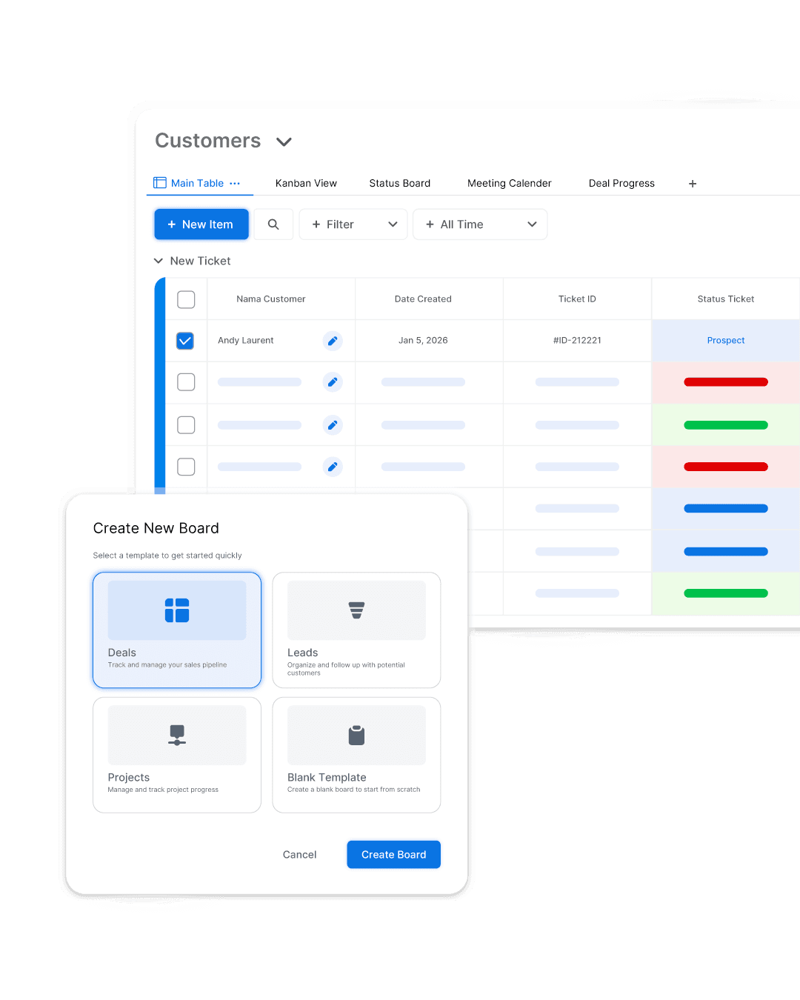

Built for conversations
Unlike traditional CRM, Cekat connects directly to your customer conversations. Every chat, call, and interaction automatically becomes a trackable record.
Customer relationships
What if your customer data could predict retention? See how AI makes it possible.
14-day free trial · No credit card required · Set up in about 10 minutes

Trusted by teams at


Why CRM
Unlike traditional CRM, Cekat connects directly to your customer conversations. Every chat, call, and interaction automatically becomes a trackable record.
Trigger follow-ups, assign leads, and move deals automatically. Reduce manual work and make sure no opportunity is missed.
Know exactly where customers come from—website, ads, WhatsApp, or social media. Track every action from the first interaction to conversion.
How it works
Explore each part of the workflow. The supporting product view updates as you choose a step.
 Cekat CRM01 / 04
Cekat CRM01 / 04Customer perspective
Our revenue increased by more than 50%! Cekat AI allows us to secure property visits and close deals even while I'm asleep, because no leads are missed.
Cekat.AI CRM helps sales teams capture and manage leads from multiple channels in one dashboard. Teams can track conversations, organize deals in pipelines, and focus on the leads most likely to convert.
Cekat.AI CRM keeps all customer interactions in one place, so support teams can quickly understand the customer's history and context. This helps agents respond faster and resolve issues more efficiently.
Yes. Cekat.AI CRM records the entry point of each lead, such as your website, ads, WhatsApp, or social channels. This helps you understand customer journeys and identify the channels that drive the most conversions.
Cekat CRM
See every conversation, track every journey, and automate follow-ups, all in one AI-powered CRM.